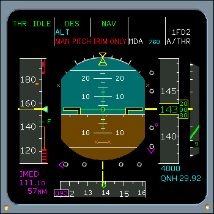

Flight Control Laws
Mechanical Backup - Description
In the event of a complete loss of electrical flight control computer signals, the airplane reverts to a mechanical mode. The side stick is inoperative, pitch is controlled via pitch trim wheel, roll and yaw are controlled through the rudder pedals.
PITCH CONTROL - Pitch control is achieved through the horizontal stabilizer by use of the manual trim wheel if hydraulic (green or yellow) power is available. A red MAN PITCH TRIM ONLY warning appears on the PFD.
ROLL CONTROL - A combination of engine thrust and rudder may provide roll, yaw, and pitch control.
YAW MECHANICAL - Lateral control is accomplished using the rudder pedals if hydraulic power is available.
|  |
RECONFIGURATION OF FLT CTL LAWS
If multiple system failures occur, the flight control computers will reconfigure to a degraded flight control law. See Reconfiguration of FCL Diagram.